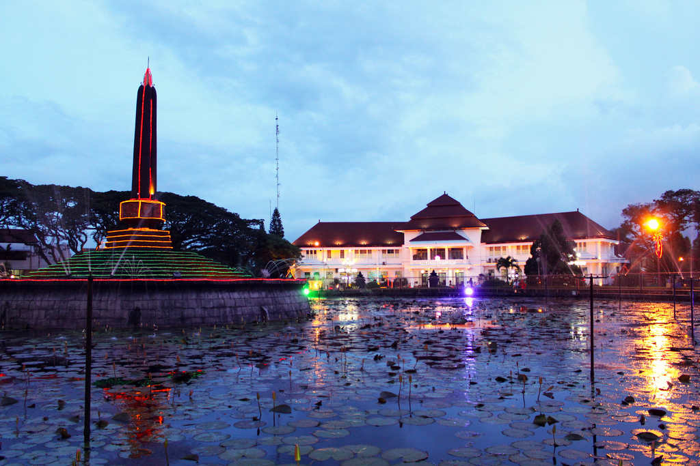

Gedung Balai Kota Malang
Kota Malang adalah sebuah kota yang terletak di provinsi Jawa Timur, Indonesia. Kota ini didirikan pada masa Pemerintahan Belanda pada tanggal 1 April 1914 dengan E.K Broeveldt sebagai wali kota pertama. Kota ini terletak di dataran tinggi seluas 145,28 km² yang merupakan enklave Kabupaten Malang. Bersama dengan Kota Batu dan Kabupaten Malang, Kota Malang merupakan bagian dari kesatuan wilayah yang dikenal dengan Malang Raya.
Malang juga terkenal sebagai kota bunga karena banyaknya bunga yang menghiasi kota. Kota Malang dikenal sebagai kota seni karena banyaknya kesenian khas dari kota ini, mulai dari tarian hingga pertunjukan, seperti Tari Topeng Malang.